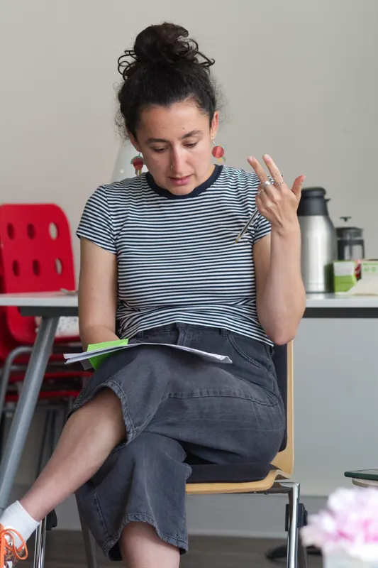

Nos actions · Ateliers de 3 heures
nos ateliers de consentement
Cet atelier t'invite à explorer le consentement dans un cadre bienveillant et participatif.
tu pourras emporter
Prochaine session le Sample date label à Sample time label
Pour qui
cet atelier est pour toi si...

tu es parent
Tu souhaites améliorer la communication avec tes enfants, respecter leurs limites et leur apprendre à poser les leurs dès le plus jeune âge.
tu es professionnel·le
Tu cherches à mieux gérer les relations au travail, poser tes limites professionnelles et créer des interactions plus saines avec collègues et clients.
tu es impliqué·e dans une relation
Couple, relation ouverte, polyamour ou autre forme relationnelle : tu souhaites mieux communiquer tes besoins et désirs, et construire des relations plus équilibrées et authentiques.
tu es étudiant·e ou jeune actif·ve
Tu construis tes relations amicales, amoureuses et professionnelles, et tu aimerais naviguer ces interactions en respectant tes limites.
tu as du mal à dire non
Tu te sens souvent obligé·e d'accepter des choses qui ne te conviennent pas, et tu cherches à apprendre à t'affirmer sans culpabiliser.
tu es simplement curieux·se
Tu souhaites mieux comprendre le consentement au-delà du contexte sexuel et découvrir comment il s'applique dans toutes tes relations quotidiennes.
Pour l'instant, nos ateliers sont réservés aux adultes : un module pour les enfants et les adolescent·es est en exploration. En attendant, on a réuni des livres et des outils pour en parler avec eux dans les ressources.
Déroulé
programme de l'atelier (3h)
Un parcours progressif pour explorer toutes les dimensions du consentement

accueil & cadre
Présentation de l'équipe, des objectifs et création d'un cadre sécurisant
les règles du consentement
Découvrir l'acronyme RÈGLES (Révocable, Éclairé, Gagnant-Gagnant, Libre, Explicite, Spécifique)
dire non
S'entraîner à poser un "non" franc et remercier pour le "non" de l'autre
repérer les bris
Reconnaître les défauts et bris de consentement dans des situations concrètes
pause
la négociation gagnant-gagnant
Explorer le spectre entre OUI et NON, et négocier pour trouver un accord juste
changer d'avis (révocable)
Pratiquer le retrait du consentement et accueillir le changement d'avis de l'autre
identifier les biais
Comprendre les pressions sociales, affectives et les biais qui influencent nos choix
tenir face à l'insistance
Muscler sa capacité à résister aux pressions et tenir un "non"
cercle de clôture
Partage des apprentissages et distribution des ressources à emporter
En pratique
infos pratiques
Tout ce qu'il faut savoir avant de s'inscrire
durée
3 heures avec pause
Horaire selon la session
lieu
Strasbourg
Adresse communiquée aux inscrit·es · accessible PMR
groupe
6 à 15 personnes
Intimité préservée
gratuit
0 €, pour tout le monde
Un don libre est possible pour soutenir l'association

bon à savoir
Notre cadre
notre cadre
Ce qu'on s'engage à tenir, pour que chacun·e puisse explorer à son rythme.
tu participes si tu veux
Chaque exercice est facultatif. Observer est une façon de participer, et tu peux sortir quand tu veux.
ce qui se dit reste ici
Confidentialité : rien de ce qui se partage en atelier n'en sort.
personne n'est mis·e en défaut
On ne te demande ni de raconter ton vécu, ni de te justifier. L'atelier n'est ni un espace thérapeutique ni un tribunal : on est des facilitateur·ices formé·es, pas des thérapeutes.
on protège le groupe
On commence à l'heure : au-delà de 20 minutes de retard, on ne peut plus t'accueillir. Si deux personnes ou moins sont inscrites, on annule et on te prévient.
Témoignages
ce que les participant·es en disent
Des personnes qui sont venues, et qui en parlent mieux que nous.
C'est la première fois que je participais à un atelier autour de la notion de consentement, et première fois tout court que je participais à un atelier militant, et ce fût une très belle première fois ! […] je me suis sentie en sécurité et à l'aise pour participer facilement. Le contenu en lui-même a été très intéressant et m'a apporté des notions nouvelles alors que je pensais déjà être assez calée sur le sujet. Les exercices pratiques sont un vrai plus ! […]
— Leyla
En tant qu'homme cis, je craignais que la question du consentement ne soit abordée que par le prisme des violences sexistes, dans lesquelles les hommes sont très majoritairement mis en cause. Mais l'angle de l'atelier était bien plus large que ça, et mettait en lumière le fait que poser ses limites, et dépasser les limites d'autrui, était sans rapport avec les questions de genre.
— Pierre
Une très belle expérience à partager! Venu en couple, j'avais un peu d'appréhension à l'idée de parler de moi ou de nous. La force de l'atelier est d'approcher le consentement avec des exemples simples, progressifs et du quotidien : "tu me prêtes ton crayon? ...". Une prise de recul qui permet d'approcher la notion de manière sereine. Merci beaucoup.
— Nicolas
Belle expérience enrichissante. Un collectif motivé, engagé et respectueux qui nous a donné la possibilité de réfléchir et de s'exprimer sur une notion complexe et évolutive, souvent mal comprise dans notre société. Je repars avec des questions, des envies de revenir en discuter et des pistes pour améliorer mes propres relations interpersonnelles.
— Sam
Je recommande cet atelier à tout le monde, que vous ayez déjà des connaissances sur le sujet du consentement (et pas que sexuel) ou non, vous y apprendrez forcément des choses dans un cadre cool et bienveillant ! Je repars avec plein de clés pour m'affirmer et oser dire non.
— Lou
Cet atelier aurait le mérite d'être proposé en milieu professionnel, en milieu associatif, dans les lycées, dans les facs, sur les sites de rencontres amoureux et amicaux, et partout dans le monde en fait. J'ai encore appris de nouvelles choses sur moi-même et sur les relations interpersonnelles en général. Ça fait grandir et c'est inspirant.
— Alex
réserve ta place maintenant
Choisis la date qui te convient. Chaque atelier est gratuit — tu peux faire un don si tu le souhaites.
Atelier de consentement - Niveau 1 - Tout public
- RéserverSample date labelSample time labelavec
Aucune date ne te convient ? Reçois les prochaines par la newsletter